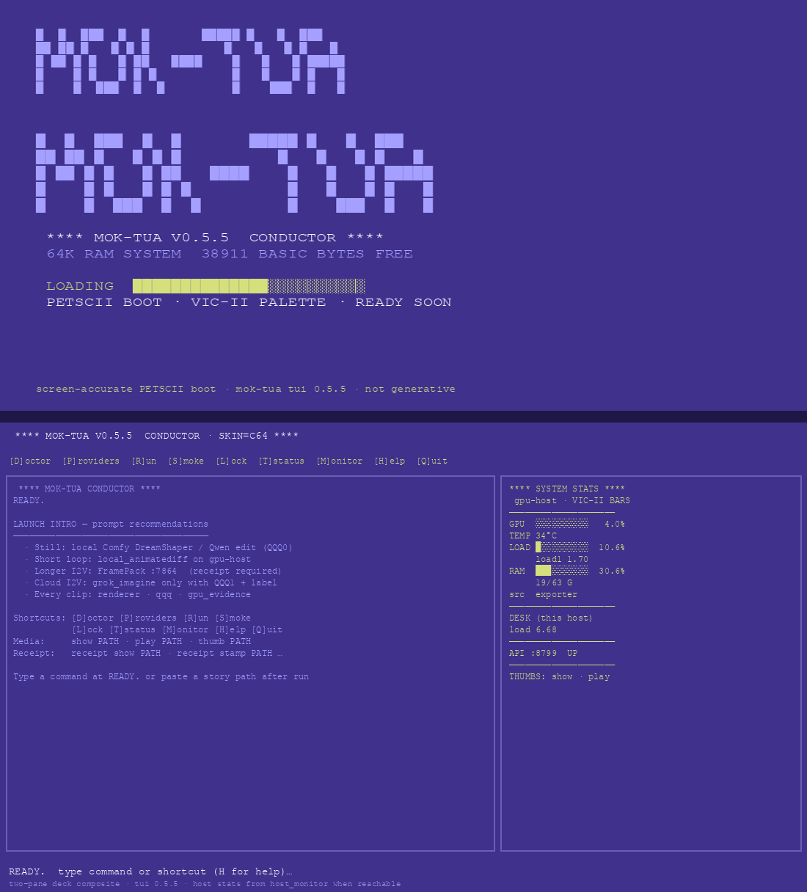

mok-tua v0.5.6 · tested capability map · gpu-host Comfy (gpu-host) · private
How one source still moves through the conductor
Accuracy over montage. Identity seed is the real 00-ceo-source-still selfie.
mok-tua does not reskin ComfyUI — it plans shots, stamps receipts, and launches gpu-host jobs.
Wide storyboard panels are prompt-locked txt2img (IPAdapter weights incomplete on host);
close-up + face polish use LoadImage → img2img from the source still.
Short motion = AnimateDiff on gpu-host (not cloud Grok I2V).
0 · SOURCECEO selfie
LoadImage seed
→
CONDUCTORTUI · CLI · API
QQQ0 · receipts
→
STILLS / POLISHComfy DreamShaper_8
storyboard + refine
→
LOOP / I2V familyAnimateDiff short clip
+ optional Wan graph
unit 20 OK
TUI PETSCII boot
two-pane stats
receipt stamp
gpu-host stills GPU 100%
AnimateDiff QQQ0
FramePack UI I2V pending
Wan ports honest skip
0 · Source identity · real still
0 · Source still
00-ceo-source-still.jpg — prompt + LoadImage context
Public-safe silly identity · forehead marker · used for polish + CU · reference for storyboard prompts
identity seed · not a crop montage

citation: source photo · route = operator selfie (not Comfy-generated) · reused as LoadImage for gpu-host jobs
Conductor · live C64 deck (0.5.5+)
Conductor TUI
PETSCII loader → two-pane (log left · VIC-II stats right)
python3 scripts/mok_tua_cli.py tui · skins c64 | green | mono | modern
screen-accurate composite · tui strings + host_monitor

citation: mok-tua tui 0.5.5+ · no generative model · optional live Textual; composite from petscii + stats_panel when headless
Generated on gpu-host · cited
1 · Storyboard sheet
example-storyboard-sheet.jpg — six CEO-context panels
gpu-host Comfy · DreamShaper_8_pruned · hybrid txt2img + CU img2img · QQQ0
regenerated 2026-08-05 · replaces prior instructor woman sheet

renderer: gpu-host_comfy_storyboard_hybrid · model: DreamShaper_8_pruned · host_role: gpu-host · qqq: QQQ0 · identity: prompt-locked wide + LoadImage CU · receipt: docs/assets/receipts/example-storyboard-sheet.receipt.json
2 · Face polish
example-face-polish.jpg
gpu-host Comfy img2img denoise≈0.28 · DreamShaper_8
BEFORE = source · AFTER = refine

renderer: gpu-host_comfy_img2img_face_polish · host_role: gpu-host · QQQ0 · receipt: example-face-polish.receipt.json
3 · Short loop proof
AnimateDiff frame strip
gpu-host ADE mm_sd_v15_v2.fp16 + VHS · 16f @ 8fps · GPU peak 100%
not cloud Grok I2V

renderer: gpu-host_comfy_animatediff · model: DreamShaper_8 + mm_sd_v15_v2 · host_role: gpu-host · QQQ0 · mp4 in work/ (not git blob)
Vendor graph families (unchanged chrome · labeled)
4 · I2V graph family (example)
Comfy Wan-style complex video graph — not this CEO run
docs/assets/vendor/comfyui-complex-video-i2v-wan.png · graph family only
vendor example · do not claim as this smoke’s runtime
I2V input still (this wave)
LoadImage → video sampler → SaveVideo / VHS

citation: vendor graph screenshot · CEO still inset from this repo · actual CEO motion proof above = AnimateDiff receipt
5 · Image graph family
Complex still / hiresfix (vendor)
vendor example · CEO stills used DreamShaper minimal/img2img graphs
6 · Director desk
Director’s Console (unchanged)
upstream DirectorsConsole chrome · mok-tua owns ledger / QQQ / launches
Tested this stamp: unit tests · TUI boot/deck · receipt CLI · gpu-host Comfy stills · CEO storyboard hybrid · CEO face polish img2img · AnimateDiff short loop.
Pending: FramePack UI I2V receipt · Wan live ports · IPAdapter FaceID weights install.
Never: label cloud Grok I2V as gpu-host local · invent provenance for untouched pres-smoke mocks.